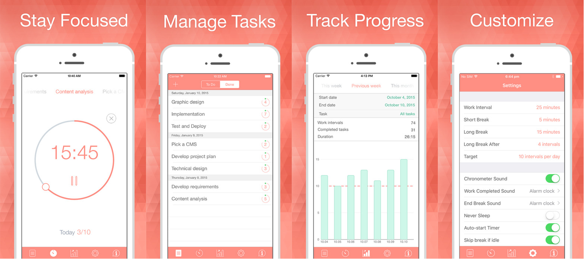
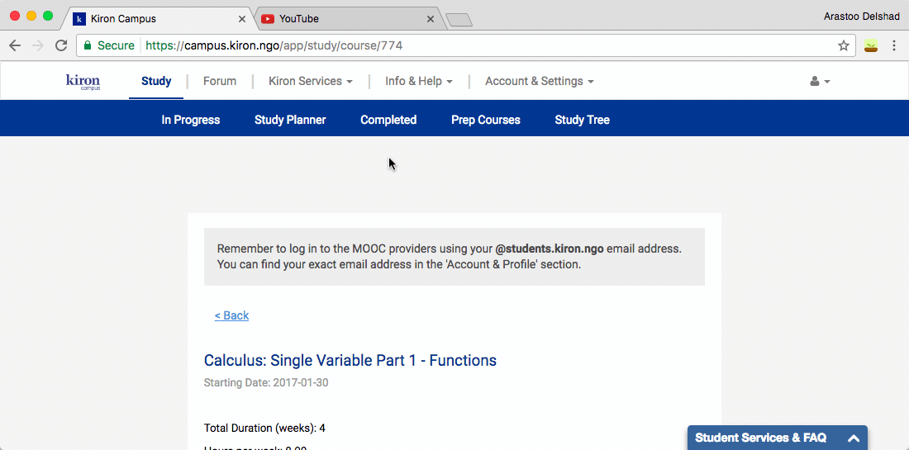
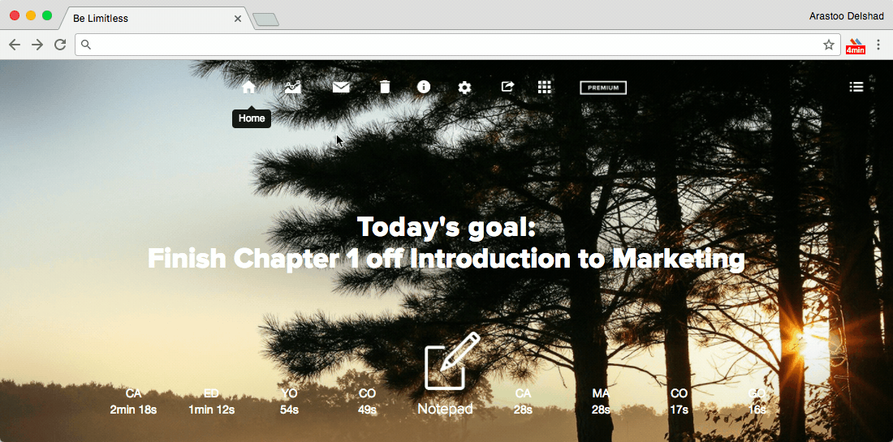
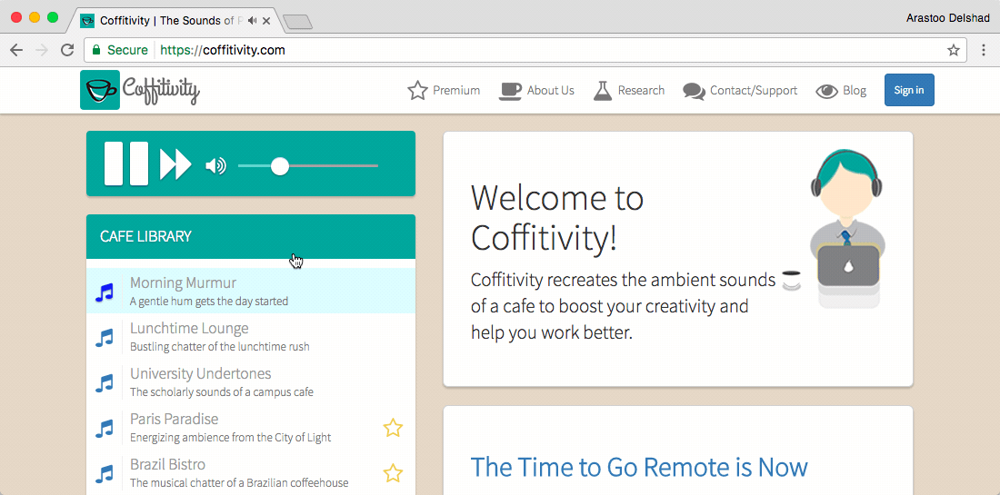
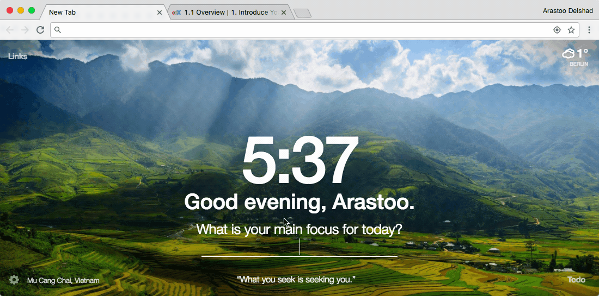

Focusing apps
Be Focused¶

Staying on task seems is a real challenge while studying in front of a screen. The Be Focused App lets you get things done by breaking up individual tasks among discrete intervals, separated by short breaks. It’s a surprisingly effective way to retain motivation and focus. Create tasks, configure breaks and track your progress throughout the day, week or custom period. It's available for iPhones and iPads free and Mac $1.99.
Tip
Breaks up individual tasks among discrete intervals, separated by short breaks.
Available on

Features of the Be Focused App on an Apple iPhone
Forest¶
Forest is an awesome app that helps you to put your phone down and focus on what's more important in your life. It's available for Android Phones free, iPhones $1.99 and Google Chrome free.
Tip
Blocks procratination pages like Facebook and YouTube for 30 minutes. During the time a little tree is groing.
Available on

Demonstration of the Forest App within Google Chrome
StayFocused¶
Rather than block out the internet for set periods, StayFocusd offers a so called "nucelar option" that blocks all websites, when the work needs doing now, as well as a "SmartBomb" option that just blocks content like videos and pictures. It's available for Google Chrome free.
Tip
Blocks procratination by blocking the internet except for specific pages (e.g. Edx or corusera)
Available on

Demonstration of the StayFocusd App within Google Chrome
Be Limitless¶
Be Limitless turns your browser into a dashboard to easily identify where your time is spent and gives productivity suggestions. The dashboard also includes a smart notepad and a ToDo list section. It's available for Google Chrome free.
Tip
Gives you an overview of the time you spend on procrastination websites and the time you actually spend on websites for studying (like Edx or coursera). Available on

Demonstration of Be Limitless within Google Chrome
Coffitivity¶
Coffitivity recreates the ambient sounds of a coffee shop to boost your concentration and thereby helps you to work better. Especially if you are studying late at night. It's available for
AppName short summary of the App Android Phones free, iPhones free and Google Chrome free.
Tip
Recreates the ambient sounds of a coffee shop. Available on

Demonstration of the Coffitivity website in Google Chrome
Momentum¶
Momentum turns every new tab page within your browser into a moment of calm and inspires you to be more productive. Set a daily focus, track your ToDos, and get inspired with a daily photo and quote. Eliminate distractions and beat procrastination with a reminder of your focus for the day on every new tab load.It's available for Google Chrome free.
Tip
Turns your browser into a tool to beat procrastination and to keep track of your ToDos. Available on

Demonstration of the Momentum App within Google Chrome